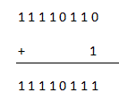
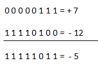

Representation
As we have already discussed 2's complement represents any negative binary number. The concept comes from subtracting the number from 2N, where N is the number of bits of that number. So if we want to represent a negative binary number we have to first consider its positive magnitude, then subtracting that value form 2N ( where N is the number of bits of that particular number as stated earlier) that number is the negative equivalent of that negative number in 2's complement method. Now we will go through the method of finding 2's complement of a number with an example.
Method and Example
In the easiest way to find out the 2's complement of a binary number we have to find out the 1's complement of that number first then add 1 with that. Now let us look at an example to understand the method more easily.
Suppose we have to represent ( - 5)10 in binary number.
Step 1
We have to consider binary equivalent of ( + 5)10 which is (0 0 0 01 0 0 1)2
Step 2
Now we have to find out 1's complement of 1 0 0 1 which is = 1 1 1 1 0 1 1 0
Step 3
And finally we have to add 1 with the result

This is the negative binary representation of (-5). If we convert the result in decimal number system we will get 1 1 1 1 0 1 1 1= 25110 which can be said as (24 - 1) which we already discussed is the actual definition of 2's complement.
Subtraction using 2’s complement
One of the most popular applications of 2's complement is the subtraction of binary numbers using 2's complement method. This method is preferred because here subtraction can be done by doing additions. With an example we will be able to grasp the method at once.
We want to do 7 - 12
Step 1
Taking 2's complement of minuend (12) which is = 1 1 1 1 0 1 0 0
Step 2
Adding the result with binary equivalent of 7

So the subtraction method using 2's complement method is hereby explained.
 by
by